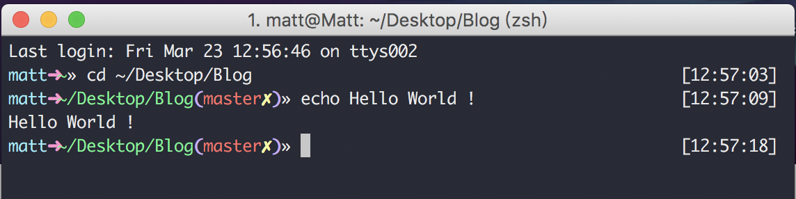
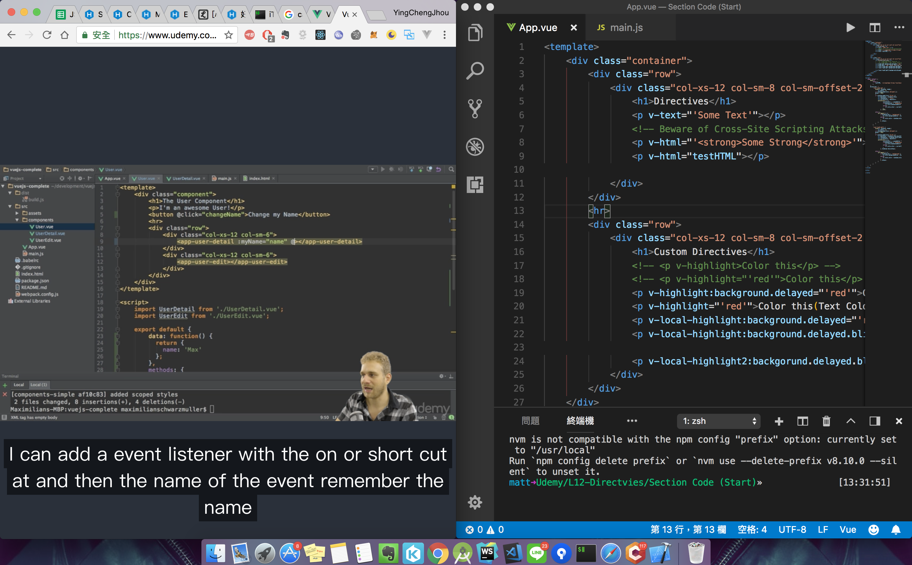

好用的 Mac App
Mar 23, 2018
工欲善其事，必先利其器。
以下介紹幾個好用的 App 幫助生活更有效率
讓開發日常更有效率
-
- 身為一個有效率的工程師, 一定常常使用到terminal。
- 然而預設單調的樣式總會讓人眼花繚亂, iTerm2提供了各種樣式, 幫助工作更有邏輯。
此為我所使用的樣式:
相關設定及細節可參考在社群很活躍的Huli大大
-
- 讓你更快速去切割所開啟的應用程式畫面, 下載完後只要幾個指令就可以快速上手
個人學新技術時, 左邊開教學影片( Option + Command + 左鍵 ), 右邊為IDE( Option + Command + 右鍵 )。 並且不會為佔掉一個桌面的空間

可以參考Youtube 影片
好用小物
- AppCleaner
- 深度清理不需要的應用程式, 不要留下垃圾!
- Caffeine
- 讓電腦保持清醒